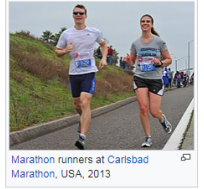
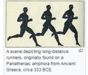
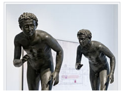
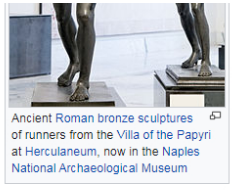
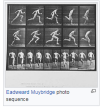
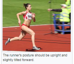
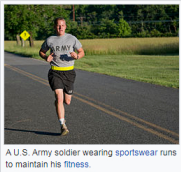
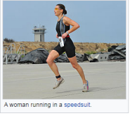

From Wikipedia the free encyclopedia
Not to be confused with Gait.For other uses see Runner (disambiguation), Runners disambiguation) and Running (disambiguation)
Running is a method of terrestrial locomotion allowing humans and other animals to move rapidly on food. Running is a type of gait characterized by an aerial phace in which all feet are above the ground (through there are exception). [1] This is in contrast to walking. Where one foot is alway in contact with the ground, the legs are kept mostly straight and the center of gravity vaults our the stance leg or legs in an inverted pendulum fashion. [2] A feature of a running body from the viewpoint of spring-mass mechanics is that changes in kinetic and potential energy within a stride occur simultaneously, with energy storage accomplished by spring tendons and passive muscle elasticity.[3] The term running can refer to any of a variety of speed ranging from jogging to sprinting.
Running in humans associated with improved health and life expectancy.[4]
It is assumed that the ancestors of humankind developed the ability to run for long distance about 2.6 million year ago, probbly in order to hunt animals.[5] Copmetitive running grew out of religious festival in variou areas. Records of competitive racing date back to the tailteanngames in ireland between 632 BEC and 1171 BCE,[6][7][8]while the first recorded Olympic Games took place in 776 BCE. Running has been described as the world's most accessible sport.[9]
Conents [hide]
See also: History of physical training and fitness
It is thought that human running evolved at least four & a half million years ago out of the ability of the ape-like Australopithecus an early uncestor of humans, to Walk upright on two legs.[10]
Early human most likely developed in two endurance runners from the practice of persistence hunting on animals, the activity of following & chasing until a prey is too exhausted to feel, succumbing too "chase myopathy" (sears 2001), and that human features such as the nuchal ligament, abundant Sweat glands, the Achilles tendons, big Knee jointsand muscular glutei maximi, were changes caused by this type of activity (Bramble & lieberman 2004, et al).[11][12][13] The theory as first proposed used comperetive physiological evidance and the natural habits of animals when running, indicating the likelihood of this activity as a successful huntinng method. Further evidence from observation of modern-day hunting practice also indicated this likelihood (Carrier et al. 1984).[13][14] Accourding to sears (p. 12) scientific investigation (Walkers and leakey 1993) of the Nariokotome skeleton provided further evidance for the carrier theory.[15]
 Competitive running grew out of religious festivals in various areas such as Greece, Egypt, Asia and the East African Rift in Africa. The Tailteann Games, an Irish sporting festival in honor of the goddess Tailtiu, dates back to 1829 BEC, and is one of the earliest records of competitive running.[citaton needed] The Origins of the Olympics and Marathon running are shrouded by myth and legend, though the first recorded games took place in 776 BEC.[16] Running in Ancient Greece can be traced back to these games of 776 BEC.
Runner gait can be divided in to two phases in regard to the lower extremity: stance and swing.[17][18][19][20][21] These can be future divided into absorption, propulsion, initial swing and terminal swing. Due to the continuous nature of running gait, no certain point is assumed to be the beginning. However for simplicity, it will be assumed that absorption and footstrike mark the biginning of the running cycle in a body already in motion.
Footstrike occurs when a planter portion of the foot makes initial contact with the ground. Common footstrike types include forefoot, midfoot and heel strike types.[22][23][24] These are characterized by initial contact of the ball of the foot, ball and heel of the foot simultaniously and heel of the foot respectively. During this time the hip joint is undergoing extension from being in maximal flexion From the previous swing phase. For proper force absorption, the knee joint should be flexed upon footstrike and the ankle should be slightly in front of the body.[25] Footstrike begins the absorption phases as forces from initial contact are attenuated throughout the lower extremity. Absorption of forces continuous as the body move from footstrike to midstance due to vertical propulsion from the toe-off during a previous gait cycle.
Midstance is defined as the time at which the lower eztremity limb of focus is in knee flexion directly underneath the trunk, pelvis and hips. It is at this point that propulsion begins to occur as the hips undergo hip extension, the knee joint undergoes extension and the ankle undergoes planter flexion. Propulsion continues untill the leg is extended behind the body and toe off occurs. This involves maximal hip extension, knee extension and plantar flexion for the subject, resulting in the body being pushed forward from this motion and the ankle/foot leaves the ground as initial swing begins.
Initial swing is the response of both stretch reflexes and concentic movements to the propulsion movements of the body. Hip flexion and knee flexion occur biginning the return of the limb to the starting position and setting up for another footstrike. Initial swing ends at midswing, when the limb is again directly undemeath the trunk, pelvis and hip with the knee joint flexed and hip flexion continuing. Terminal swing than begins as hip flexion continues to the point of activation of the stretch reflex of the hip extensors. The knee begins to extend slightly as it swings to the anterior portion of the body. The foot then makes contact with the ground with footstrike, completing the running cycle of one side of the lower extremity. Each limb of the lower extremity works opposite to the other. When one side is in toe-off/propulsion, the other hand is in the swing/recovery phase prepairing for footstrike.[18][19][20][21] Following toe-off and the beginning of the initial swing of one side, there is a flight phase where neither extremity is in contact with the ground due to the opposite side finishing terminal swing. As the footstrike of the one hand occurs, initial swing continues. The opposing limbs meet with one in midstance and midswing, beginning the propulsion and terminal swing phases.
Exercise physiologists have found that the stride rates and extremely consistant across professional runners, between 185 and 200 steps per minute. The main difference between long- and short-distanse runner is the length of stride rather then the rate of stride. [50][51]
During running, the speed at which the runner moves may be calculated by multiplying the cadence (steps per minute) by the stride length. Runner is often measured in terms of pace[52] in minutes per mile or kilometer. Different types of stride are necessary for different types of running. When sprinting, runners stay on their legs up, using shorter and faster strides. Long-distance runners tend to have more relaxed strides that vary.
Further information: Neurobiological effect of physical exercise
Running can assist people in losing weight, staying in shape and improving body composition.Research suggests that the person of average weight will burn approximately 100 calories per mile run.[58] Running increases one's metabolism, even after running; one will continue to burn an increased level of calories for a short time after the run.[59] Different speeds and distances are appropriate for different individual health and fitness levels. For new runners, it takes time to get into shape. The key is consistency and a slow increase in speed and distance.[60]
Running can also have psychological benefits, as many participantsin the sport report feeling an elated, euphoric state, often referred to as a "runner's high".[61] Running is frequentily recommended as therapy for people with clinical depression and people coping with addiction.[62] A possible benefit may be the enjoyment of nature and scenery, which also improves psychological well-being[63] (see Ecopsychology $ practical benefits)
In animal models, running has been shown to increase the number of newly created neurons within the brain.[64] This finding could have significant implicatios in aging as well as learning and memory. A recent study published in Cell Metabolism has also linked running with improved memory and learning skills.[65]
